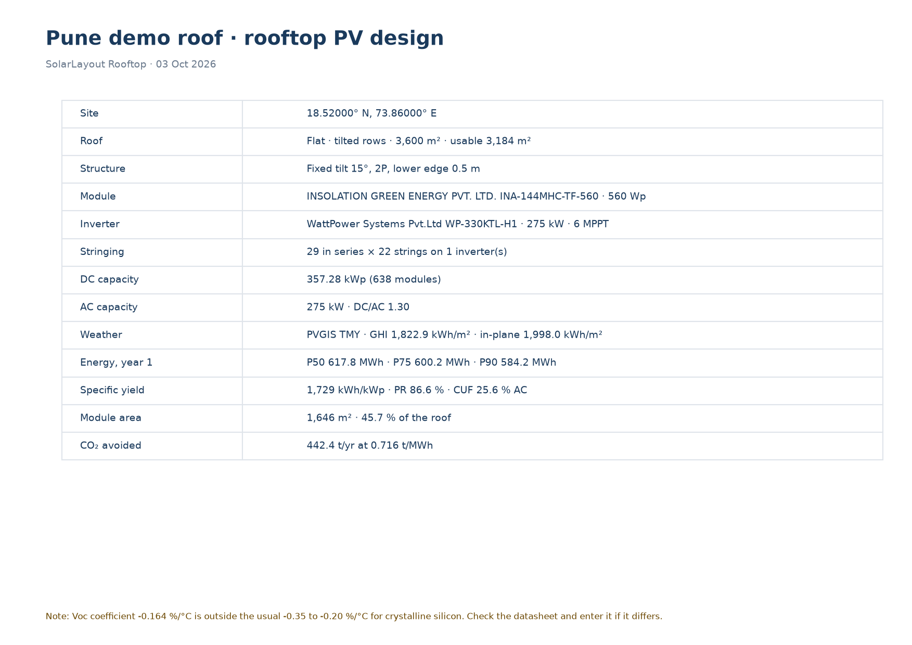

Design reportA4 landscape
Before a chosen option, in the API's words, leading to the Strings lens; the first load with its skeletons; a download on its way with its rings; a download that failed as a toast with Try again; the name edited here and in the switcher, and an empty name refused; the toast of a table copied; on phone.
Before a chosen option (no voltage, no positions, no length that fits, too few positions) every row but the project file is dim (opacity-disabled, 0.45) with its icon, and its facts are the API's no_options title, “Choose a system voltage to size the strings” (decision 11, D37). “Download all” is dim with them: the zip needs an option as the five files do. The project file row stays live: the .rtd is written without an option or a run (decision 1).
The preview is the decision card of components.md: note-surface, the accent line and halo, the note mark, the API's title as the instruction and its message as the why, “600, 1000 or 1500 V. Nothing is sized until you choose.”, and a secondary button to the Strings lens, where the voltage is chosen. No voltage is offered here. The head keeps the item's title; its facts say “A4 landscape” without the count, which comes with the pages (decision 14); the page buttons and Download PDF are dim.
The web judges nothing itself: require_option of the API would refuse the same way, and the same words serve every reason of no_options.
The first load: no value was ever there, so every place of a fact holds a skeleton (components.md “Skeleton”): the facts of the rows and of the project file, lines of 12; the facts of the preview's head; the paper as a block of the page's shape, A4 landscape, on surface-2; the six thumbnails as blocks with their lines. They breathe over 1.6 s and stand still under reduced motion.
The titles stay: they are known before the run. The buttons are dim until the pages come. A fact that was there is never replaced by a skeleton: it stays, dimmed (the next card).

A download on its way (decision 12): the report row shows the turning ring of 16 in place of its download icon; the button “Download PDF” shows the ring before its words and is dim without a shadow until the file is saved; two presses while it is on its way are one download. “Download all” the same, with its ring, while the zip is made: about a second on the demo, the drawing lock held.
A download done says nothing: the browser shows the file. A download that failed is the toast of the next card.
A download that failed is a toast with a note (components.md “Toast”): the exclamation mark of 20, the client's words when the server cannot be reached, “The server cannot be reached. Check the connection and try again.”, the action “Try again” in accent, Geist 500, and a quiet close button of 32. At the bottom of the screen in its middle, 24 from the edge, in the layer z-toast; it stays until it is closed, and Try again downloads again. The last good state of the page stays behind it.
A refusal of the API (no option chosen, a wrong day) stands in the same toast in the API's words. On phone the toast stands above the tab bar, 12 from the edges, its action and its close 44 high.
The shell gets its Toaster for this (the open item): one toast at a time, in the order they came, said to a screen reader as a status.
Pune-demo-roof,-block-B.rtd680 KBFormat 2insolation-ina-144mhc-tf-560.PANwattpower-wp-330ktl-h1.ONDPune-demo-roof.rtd680 KBFormat 2The name is typed in the field of the project file preview: the focus look (accent border, the halo), the caret after “Pune demo roof, block B”. The file's name under it follows every key, as the API will write it: “Pune-demo-roof,-block-B.rtd” (fileStemOf in TS mirrors file_stem: what a file system refuses and every run of spaces become one dash; the comma stays, since the API keeps it). The head's facts, the top bar and the switcher's trigger keep the committed name until Enter or the focus leaving commits the draft.
Enter or leaving the field commits: the document's name changes, trimmed, 200 characters at most, undone by key like any edit; it asks neither the layout nor the run (decision 13). The top bar and the switcher show it at once, and every downloaded file carries it.
In the project switcher the “This design” row is the same field, across the row, with the state of saving under it. On phone and tablet the switcher is a bottom sheet over the dimmed screen, the field 44 high.
An empty or blank name is not committed: the field gives the name of before back and says “A name is needed” under itself, in the style of a number field's hint (D32: an edit that cannot stand is not committed). The next good entry takes the words away.
Pune-demo-roof,-block-B.rtd680 KBFormat 2insolation-ina-144mhc-tf-560.PANwattpower-wp-330ktl-h1.OND| Item | Specification | Qty | Unit |
|---|---|---|---|
| PV module | INSOLATION GREEN ENERGY PVT. LTD. INA-144MHC-TF-560, 560 Wp, bifacial 0.80 | 638 | pcs |
| String inverter | WattPower Systems Pvt.Ltd WP-330KTL-H1, 275 kW, 6 MPPT | 1 | pcs |
| Mounting structure | Fixed tilt 15°, 2P, lower edge 0.5 m | 27 | tables |
| DC cable | 4 mm² Cu, 1500 V DC, red + black | 1,681 | m |
| DC connector pair | MC4-compatible, matched to the module | 44 | pairs |
| AC cable | Inverter to ACDB, sized for 240 A at 800 V AC | 30 | m |
| AC distribution board | 1 incomer(s), 1 outgoing | 1 | pcs |
“Copy as table” pressed: the rows go to the clipboard as tab-separated text with a header line, and the toast of something done says “Bill of materials copied as a table” with the tick of 18 (decision 7). It leaves after 5 s (TOAST_STAYS) and stays while the pointer is over it or the focus is in it. The cable schedule says “DC cable schedule copied as a table” the same way.
The table itself does not change: the copy is of what is shown, in the order shown, so a sorted schedule is pasted sorted.